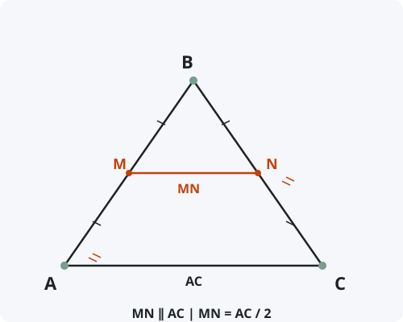

Средняя линия треугольника
Формулировка
Средняя линия треугольника — отрезок, соединяющий середины двух его сторон, — параллельна третьей стороне и равна её половине.
Обозначения
Пусть дан треугольник ABC.
M — середина стороны AB (AM = MB).
N — середина стороны BC (BN = NC).
MN — средняя линия треугольника.
Тогда: MN ∥ AC и MN = AC / 2

Доказательство
Теорема доказана.
Альтернативное доказательство (через теорему Фалеса)
Это доказательство не использует подобие треугольников.
Следствия из теоремы
- Три средние линии треугольника делят его на четыре равных треугольника, подобных исходному с коэффициентом 1/2.
- Средняя линия отсекает треугольник, площадь которого в 4 раза меньше площади исходного.
- Периметр треугольника, образованного средними линиями, равен половине периметра исходного треугольника.
- Средние линии треугольника пересекаются в одной точке и делятся этой точкой пополам.
- Средняя линия трапеции — обобщение этого понятия для четырёхугольников.
Примеры применения
Пример 1. В треугольнике ABC сторона AC = 12 см. Найдите длину средней линии MN, соединяющей середины AB и BC.
Решение: MN = AC / 2 = 12 / 2 = 6 см.
Пример 2. Средняя линия треугольника равна 8 см. Найдите сторону, которой она параллельна.
Решение: Сторона = 2 · средняя линия = 2 · 8 = 16 см.
Пример 3. Докажите, что середины сторон любого четырёхугольника являются вершинами параллелограмма.
Решение: Проведём диагональ. Средние линии двух треугольников, образованных диагональю, параллельны диагонали и равны её половине. Следовательно, противоположные стороны четырёхугольника параллельны и равны — это параллелограмм (теорема Вариньона).
Историческая справка
Теорема о средней линии треугольника была известна ещё древнегреческим математикам. Она является прямым следствием теоремы Фалеса и подобия треугольников.
Евклид в «Началах» (Книга VI) использует свойства средней линии при доказательстве теорем о подобии. В современном виде теорема формулируется в школьных учебниках геометрии.
Понятие средней линии обобщается на трапецию и другие многоугольники, а также на векторную алгебру.
Интересные факты
- Средняя линия треугольника — одна из самых простых и часто используемых теорем в геометрии.
- С помощью средних линий можно построить треугольник, равновеликий данному, но с вдвое меньшим периметром.
- В любом треугольнике можно провести три средние линии, и они образуют новый треугольник, подобный исходному.
- Теорема о средней линии лежит в основе доказательства теоремы Вариньона для четырёхугольников.
- В навигации и картографии средняя линия используется для аппроксимации маршрутов и упрощения расчётов.